ہائبرڈ آرکیٹیکچر: Supabase اور Spring Boot کے ساتھ دونوں دنیاؤں کا بہترین امتزاج
شائع شدہ: 14 January 2026
Supabase ki sādagī aur Spring Boot ki tāqat ke darmiyan chunne ke bajāye, kyun nahin donon ko milana? Janiye ek hibrid ārki ṭekchar jo har teknologi ka sab se behter faiyda uthati hai
- ٹک
-
[]
معماریت مودرن کا جھوٹا ڈیلیما
کسی مدرن ایپلیکیشن کے static frontend کے ساتھ بناتے وقت، ہم اکثر ایک بائنری انتخاب کے سامنے آتے ہیں:
-
Backend-as-a-Service حل پر سارا زور لگائیں(Supabase, Firebase) - سادہ لیکن محدود
-
مکمل backend بنائیں(Spring Boot, Node.js) - طاقتور لیکن پیچیدہ
یہ انتخاب یک جھوٹلا معضل ہے۔ ہائبرڈ آڑکی ٹیکچر ایک Third way پیش کرتی ہے: ہر ٹیکنالوجی کو وہ جگہ استعمال کرنے پر جہاں وہ سب سے بہتر کام کرتی ہے۔
عمارتی نظر
روایتی معمارتی : ایک جوڑ
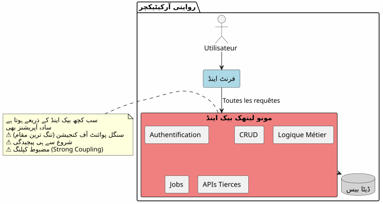
اس رویے میں، سب سے سادہ عمل (مثلاً مضمون پڑھنا، تبصرہ بنانا) بھی آپ کے بیکینڈ سے گزرنا چاہیے۔ آپ پہلے دن سے پیچیدگی کی قیمت ادا کرتے ہیں۔
BaaS معماری : تمام نمائندہ
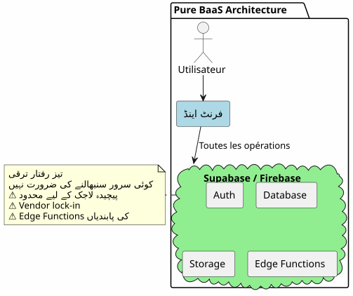
بالعکس، ایک BaaS میں تمام چیزوں کو deputی کرنا ابتداء میں پر کشش کے ساتھ ہوتا ہے لیکن جب کاروباری منطق پیچیدہ ہوتا ہے، جلد ہی اس کی حدیں ظاہر ہو جاتی ہیں۔
ہائبرڈ آركٹیکچر: ذمے داریوں کا انحصار
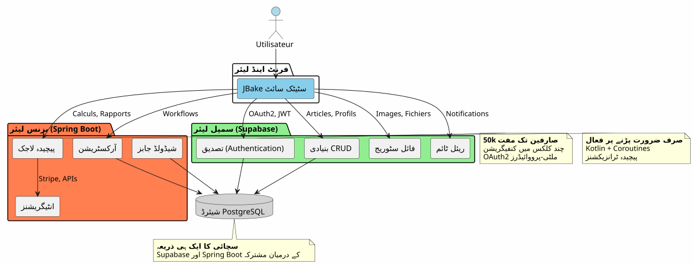
ہائبرڈ آرکیٹیکچر واضح طور پر عمل کی پیچیدگی اور فطرت کے مطابق ذمہ داریہیں الگ کر دیتا ہے۔
ڈیزائن کے اصول
اصول 1: سادہ سے شروع کریں، ہوشیاری سے ترقی کریں
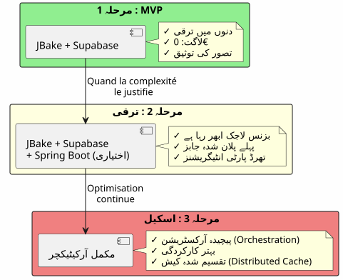
Spring Boot مت بنائیں اگر آپ کو اس کی ضرورت نہیں ہے۔Supabase کے ساتھ شروع کریں، جب پیچیدگی جائز ٹھہرے تو Spring Boot شامل کریں۔
اصول 2 : عمل کی فطرت پر جدائی

أصل 3 : ایک سچ کا منبع
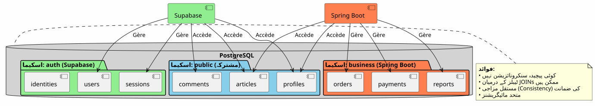
ایک ہی PostgreSQL انسیٹنس شیئر کرتے ہوئے، Supabase اور Spring Boot ایک ہی ڈیٹا پر کام کرتے ہیں بina پیچیدہ ہم آہنگی کے۔
فلوائز کی تنظیم
فلکس 1 : مرکزی تصدیق
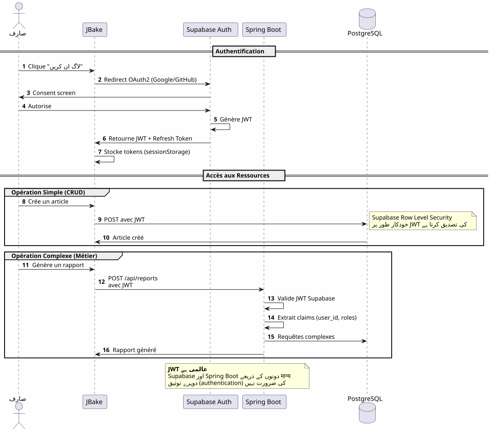
اہم نقطہ: ایک ہی تصدیق کا عمل، ایک ہی JWT، ہر جگہ استعمال ہونے کے قابل۔
فلو 2: پیچیدہ کاروباری پروسیس کی نظامبندی
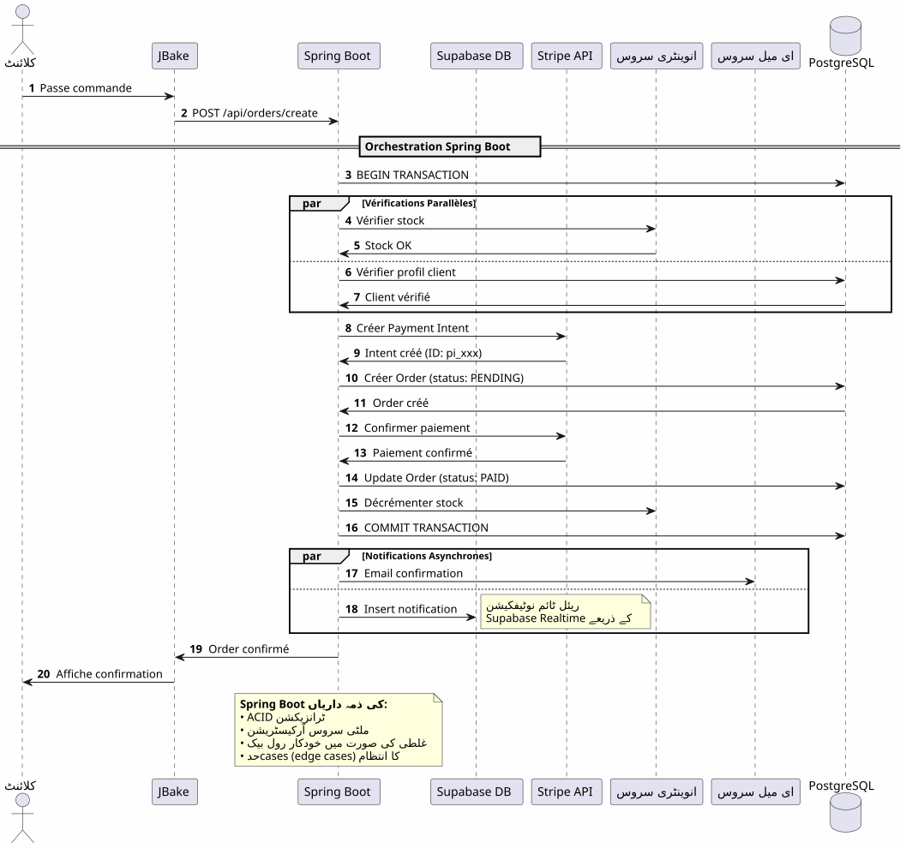
Spring Boot کیا لاتا ہےمعتبر آرکاسٹریشن مختلف پیچیدہ پروسیس جو متعدد سسٹمز کو شامل کرتا ہے، ٹرانزیکشن کی ضمانت کے ساتھ
Flux 3: منصوبہ شدہ کام اور ہم آہنگی
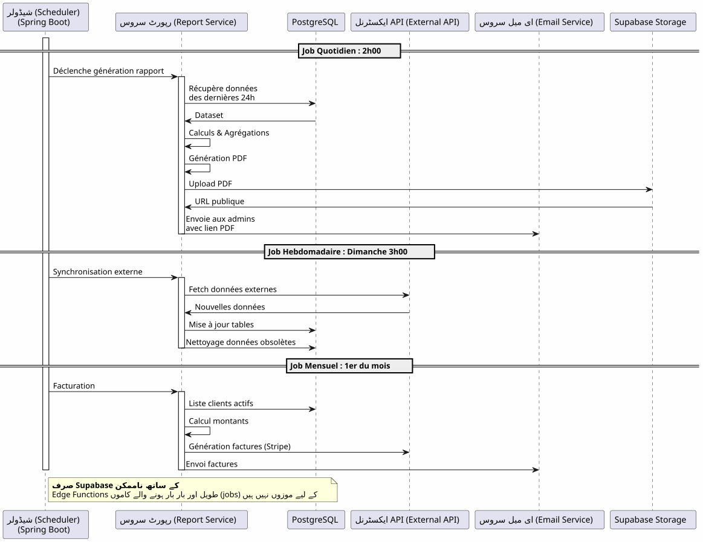
Spring Boot کیا لاتا ہے: معتبر مندرجہ ذیل کام، حالت کے انتظام کے ساتھ، خودکار ریٹری، اور ضمانتی تنفيذ۔
فیصلے کی میٹرکس
Supabase kab use karna?

Spring Boot کو کب استعمال کرنا چاہیے؟

پروجیکٹ کے قسم کے مطابق معماری کے نمونے
بلاگ / پورٹ فولیو
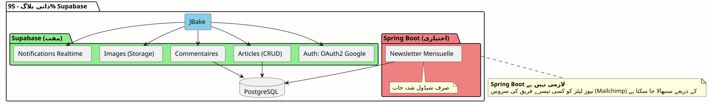
فیصلہ: 100% Supabase بہت کافی ہے۔
SaaS ایپلیکیشن
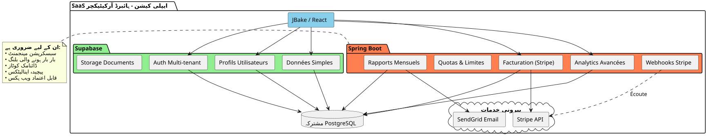
فصلاہ: لازمی ہائبرڈ معماری. Supabase اساس کے لیے, Spring Boot مهم حصہ (ادائیگی، بل).
الکترونیک تجارت
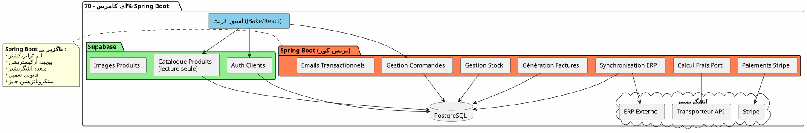
فیصلہSpring Boot ضروری ہے۔ Supabase صرف احرازِ هویت اور کیتالاگ کے لیے۔
تقدمی مایگریشن کی حکمت عملی
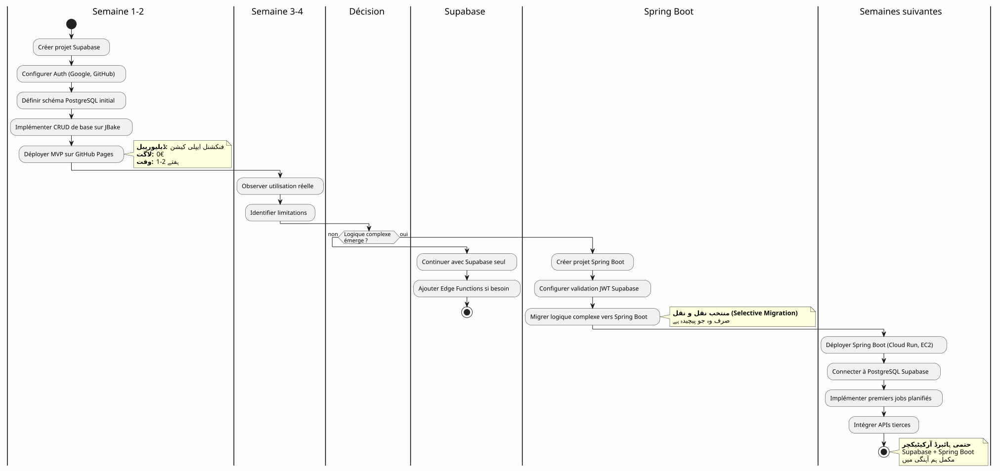
کوسٹ اور عملیاتی ملاحظات
خर्चوں کی ساخت
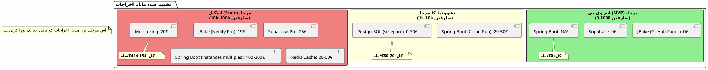
عملی ذمائم
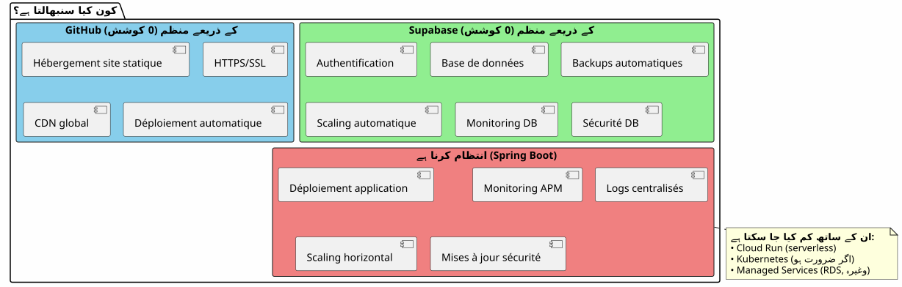
نتیجہ: مکمل توازن
سوبابیس + سپرینگ بوٹ کی ہائبرڈ آرکیٹیکچر تسوية نہیں ہے، یہ ایکسِینرجی.
یاد رکھنے والے اصول

کب یہ معمارى چنی چاہیے؟
✅ یہ معمار اچھی طرح مناسب ہے اگر :
-
آپ جلد سے شروع کرنا چاہتے ہیں (MVP دنوں میں، ماہوں میں نہیں)
-
آپ کاروبار کی پیچیدگی میں اضافے کی امید رکھتے ہیں
-
آپ ابتدائی لاگت کو کم کرنا چاہتے ہیں
-
آپ کو PostgreSQL پسند ہے اور آپ ایک واحد سچائی کا ذریعہ چاہتے ہیں
-
آپ Korlin اور Coroutines کو کاروباری کوڈ کے لیے پسند کرتے ہیں
-
آپ پوری vendor lock-in سے بچنا چاہتے ہیں
❌ یہ معمارتی مناسب نہیں ہے اگر :
-
آپ کا پروجيکت سادہ ہے اور اسی طرح رہے گا (ذاتي بلیگ → 100% Supabase کافی ہے)
-
آپ کے پاس پہلے سے ایک مستقر بیک اینڈ اسٹیک موجود ہے جسے آپ قابو رکھتے ہیں۔
-
آپ ایک رِسائی مونولیت پسند کرتے ہیں
-
آپ کو .NET، Python، یا دیگر باکینڈ زبان کی ضرورت ہے۔
آخری کلی نظریہ
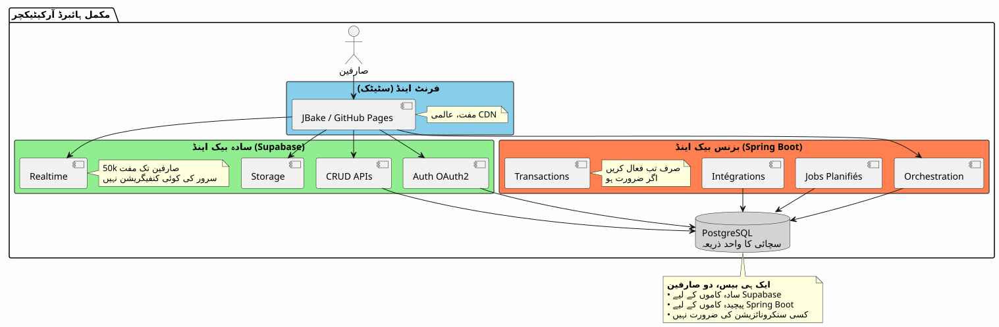
دونوں جہانوں کا سب سے بہتر
یہ معماری آپ کو دیتی ہے :
🚀 Supabase کی رفتار
-
گھنٹوں میں شروع، ہفتوں میں نہیں
-
OAuth2 کی تصدیق چند کلیکوں میں
-
خودکار طور پر پیدا کردہ REST APIs
-
سرور کی صفر کنفیگریشن
💪 سپرنگ باٹ کی طاقت
-
Kotlin اور کروتائنز کے لیے اِسائنکرونوس خوبصورت کوڈ
-
پیچیدہ کاروباری عملوں کی اورکیسٹریشن
-
قابل اعتماد منصوبہ شدہ کام
-
ACID گارنٹی شدہ ترanzections
-
مکمل Spring ایکوسیسٹم
💰 ترقیاتی اقتصاد
-
شروع کرنے اور تصدیق کرنے کے لیے 0€
-
نمو کے ساتھ چلتے والی لاگت
-
جلدی سے زیادہ انجنیرنگ نہیں
🎯 معمارتی لچک
-
تقدمی میگریشن بغیر دوبارہ بنائے
-
صرف ضرورت ہونے پر Spring Boot شامل کریں
-
کُل وینڈر لاک-إن نہیں
-
تطوّر پذیر معمارتی
مزید آگے جانے
تقنی وسائل
Supabase ڈاکیومینٹیشن :
Spring Boot کی دستاویز :
اضافی مضامین :
-
JWT کے ساتھ API کی سکیورٹی
-
PostgreSQL کے کارکردگی کی بہتری
-
پروگرسیو ہجرت کے نمونے
-
وزع معماریت میں خطاؤں کا انتظام
حقیقی استعمال کے حالات
یہ ہائبرڈ آرکیٹیکٹ کامیابی سے استعمال کی جاتی ہے :
-
SaaS B2B: احراز هویت Supabase، بیلینگ Spring Boot
-
بازاروں: Supabase کیکٹالوج, Spring Boot کے ترانزیکشنز
-
محتوا کے پلیٹ فارمز: Supabase مضامین، Spring Boot آنالیٹکس
-
اندرونی اوزارCRUD Supabase, workflows Spring Boot
ستارٹاپ چیک لسٹ
مرحلہ 1 - بنیادیں (ہفتہ 1)
-
Supabase اکاؤنٹ بنائیں - [ ] تنظیم پروژیکٹ PostgreSQL - [ ] Auth فعال کریں (Google، GitHub) - [ ] پہلا اسکیم مقرر کریں - [ ] Row Level Security سیٹ اپ کریں - [ ] JBake سے APIs کی ٹیسٹ کریں
Phase 2 - MVP (ہفتے 2-3)
-
اسassini صفحات لاگونا - [ ] OAuth2 احراز شناخت شامل کریں - [ ] CRUD فارم بنائیں - [ ] فائلوں کے لیے Storage کو کنفیگر کریں - [ ] گیت ہب پیجز پر ڈپلوار کریں - [ ] واقعی شرائط میں ٹیسٹ
فاز 3 - ترقی (ضرورت کے مطابق)
-
پیچیدہ منطقی ضرورتوں کی شناخت کریں - [ ] در صورت ضرورت، Spring Boot پراجیکٹ بنائیں - [ ] Supabase JWT کی تصدیق کا تنظیم کریں - [ ] PostgreSQL Supabase سے کنکشن کریں - [ ] م پیچیدہ خصوصیات کو منتقل کریں - [ ] جوبز شیڈولڈ کو لاگو کریں - [ ] Spring Boot کو ڈپلוי کریں (Cloud Run، وغیرہ)
بچنے والے انٹی-پیترن
❌ مت کرو :
-
Supabase اور Spring Boot کے درمیان ڈیٹا کی نقل کریں
-
دو الگ PostgreSQL بنائیں
-
خود احراز هویت کو کڈ کریں
-
ساده CRUD کے لیے Spring Boot استعمال کریں
-
سورس-آرچیکٹر کرنا ابتداء سے
-
Supabase کے Row Level Security کو نظرانداز کریں
✅ بہتر کریں :
-
شیئر کریں ایک PostgreSQL ڈیٹا بیس
-
Supabase کو احراز هویت کرنے دو
-
Spring Boot صرف تعقید کے لیے استعمال کریں
-
سادہ سے شروع کریں اور بالتدريج ترقی کرے
-
ہر ٹیکنالوجی کی طاقتوں کا فائدہ اٹھائیں
-
ڈیٹابیس کی سطح پر RLS کے ساتھ سیکور کریں
ترقی کے امکانات
نئی قابلیتوں کی شامل
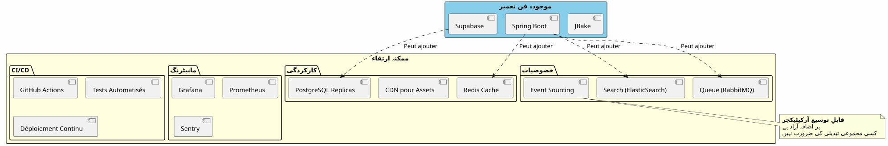
افقی سکیلنگ
جب آپ کی ایپلیکیشن بڑھتی ہے، ہائبرڈ معمارتی فطري طور پر سکیل:
Supabase :
-
خودکار طور پر ملین عمل تک سکیل بڑھاتا ہے
-
Read replicas کے لیے پڑھنے کی کارکردگی
-
امنیتی کے لیے وقت مخصوص کی بازپری
سپرینگ بوٹ :
-
لوڈ بالینسر کے پیچھے متعدد انسٹنس
-
Stateless design افقی scaling کو آسان بناتا ہے
-
Kubernetes اورکستریشن کے لیے اگر ضرورت ہو
PostgreSQL :
-
بڑے ٹیبلز کے لیے تقسیم
-
کانکشن پولنگ (PgBouncer)
-
Sharding اگر بالکل لازمی (نادر)
معماری شہادتیں
ستارٹ اپ SaaS (50k استعمال کرنے والے)
_ ہم نے 100% Supabase سے شروع کیا۔ 5k صارفین پر، ہم نے صرف Stripe بیلینگ اور ماہانہ رپورٹس کے لیے Spring Boot شامل کیا۔ ایک سال بعد، 80% ہماری آپریشنز اب بھی Supabase سے جاتی ہیں۔ Spring Boot صرف اہم حصے کو منیج کرتا ہے۔ یہ تقسیم ہمیں دوبارہ ڈیزائن کئے بغیر سکیل کرنے کی اجازت دیتی ہے۔ _
ای-لرーニング پلیٹ فارم (10k استعمال کرنے والے)
_ Supabase کی OAuth2 تصدیق نے ہمارے 3 ہفتےdevelopment بچائے۔ خود-پیدار APIs ہمارے پوری کورس کٹالوج کو منظم کرتی ہیں۔ Spring Boot صرف PDF سرٹیفکیٹس اور ترقی کے ایمیلز کے لیے استعمال ہوتا ہے۔ ساده، قابل برقرار رکھنے، قابل توسيع۔ _
مارکیٹ B2B (3k صارفین)
_ Spring Boot خریداری کرنے والوں اور بیچنے والوں کے درمیان ترanzیکشنز (اہم) کا انتظام کرتا ہے۔ Supabase باقی سب کا انتظام کرتا ہے: پروفائلز، حقیقی زمانے کی پیغام رسانی، دستاویزات۔ اس بات کے کونے ان کی یکساں PostgreSQL دیتابیس استعمال کرنے سے ہمیں پیچیدہ ہم آہنگی کرنے کی ضرورت نہیں رہتی۔ یہ ہماری سب سے بہترimar معماری انتخاب ہے جو ہم نے کیا ہے۔ _
ترکیب : ایک معاصر معمارستانی پارادایگم
Supabase + Spring Boot کی ہائبرڈ آırکیٹیکچر نئی مثال پیش کرتا ہے:معماری تخصص.
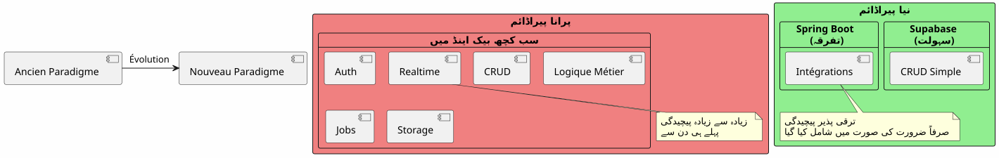
بنیادی اصل :پہلے سے موجود سروس کی شکل میں موجود چیز بناؤ نہیں۔ اپنی ایپلیکیشن کو منفرد بنانے والی چیز پر توجہ مرکوز کریں۔
80/20 کا اصول
بہت سی ایپلیکیشنز میں :
-
80% آپریشنزیہ معیاری CRUD ہیں → Supabase
-
20% عملیاتیکاروباری منطق کی ضرورت → Spring Boot
یہ فطری قانون ہائبرڈ آركیٹیکچر کی توجیح کرتا ہے
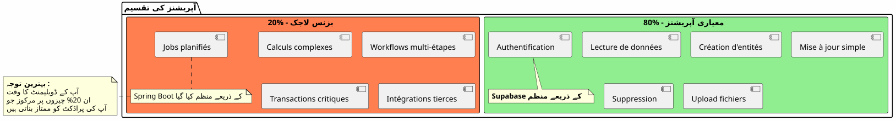
نتیجہ ختامی
ہائبرڈ آركٹچر ایک ٹیکنیکی تسوية نہیں، یہ ایکاستراتیک فیصلہ.
آپ کو اجازت دیتا ہے:
-
✅ جلدی شروع کریں ایک کام کرنے والا MVP کے ساتھ
-
✅ بہت زیادہ سرمایہ کاری کے بغیر اپنی مارکیٹ کی تصدیق کریں
-
✅ بالتدریج ترقی کریں جب complexity کی ضرورت ہو
-
اپنی لاگت کو ہر مرحلے پر منٹین کریں
-
✅ ہر ٹیکنالوجی کے بہترین فائدے کو استعمال کریں
-
✅ پیش از وقت اوور انجینئرنگ سے پرہیز کریں
-
✅ آئندہ کیلئے لچک برقرار رکھیں
وہ ظاہر کرتی ہے :
-
🎯پراگمٹیسمہر ٹیکنالوجی جہاں وہ اُٹلی ہے
-
🚀سُرعتبازار تک کم وقت
-
💰اقتصادقیمت کے مطابق لاگت
-
🔮قیاس پذیریآرکیٹیک جو آپ کے ساتھ بڑھتی ہے
-
🛡️ضبطانآزمائش شدہ اور قابل اعتماد خدمات
آپ کا اگلا قدم
اگر یہ معماریت آپ سے بات کرتی ہے، تو یہاں سے شروع کریں:
-
Supabase کا اکاؤنٹ بنائیں(مفت)
-
اپنے کم سے کم ڈیٹا سکیما کی تعریف کریں
-
OAuth2 کی توثیق کو کنفیگر کریں
-
آپ کی پہلی
JBakeصفحہ بنائèn جوAPIکو استعمال کرتی ہے -
GitHub Pages پر ڈپلائیں
آپ کے پاس ایک کارکردہ MVP ہوگا میںکچ دن.
Spring Boot ضرورت ہونے پر خود بخود آئے گا۔ پہلے نہیں۔
ہائبرڈ معمار، یہ درست چیزیں بنانے کی فن ہے، درست وقت پر۔
اچھی ترقی! 🚀
اگر آپ سمجھتے ہیں کہ یہ مضمون دیگر ڈویلپرز کی مدد کر سکتا ہے معمارتی کے مناسب فیصلے کرنے میں تو اسے شیئر کریں۔